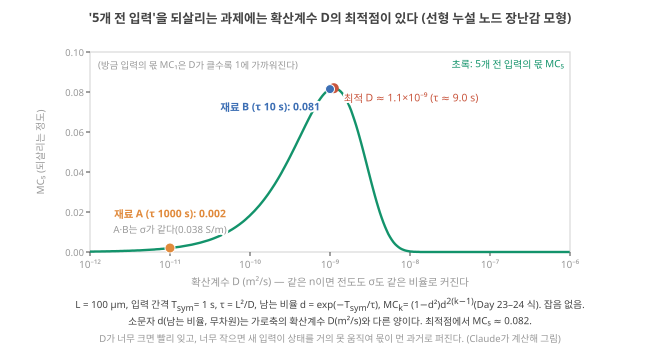
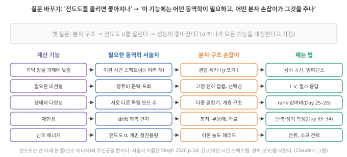

Day 44. 기억 과제에서 전도도의 최적점, 질문 바꾸기와 최소 필요 전도도
Phase 4 · 왜 이온성 고분자인가
이번 질문 — 기억이 필요한 과제에서 전도도는 높을수록 좋은가, 아니면 최적점이 있나? '전도도를 올리면 좋아지나'를 기능 → 서술자 → 분자 손잡이 → 측정으로 어떻게 다시 쓰고, 최소 필요 전도도는 어떻게 어림하나?
왜 배우나 (내 소재 연구와의 연결) — 기억이 필요한 과제에서 전도도를 올리는 것이 항상 좋은지는 내 소자의 τ가 과제의 최적(입력 간격의 약 9배)보다 긴지 짧은지로 판단합니다. 최소 필요 전도도는 내 측정 잡음으로 어림합니다.
오늘의 장면 (입력 → 내부 변화 → 출력) — 입력: 입력 간격 T_sym, 소자 길이 L, D → τ = L²/D가 Day 23–24 leaky node의 남는 비율 d를 정함 → 출력: MC₅ 곡선의 봉우리(D ≈ 1.1×10⁻⁹ m²/s)와 같은 σ인 두 재료의 0.002 대 0.081.
오늘 반드시 — 기억 과제에서는 D(전도도)에 최적점이 있어 "높을수록 좋다"는 성립하지 않는다. σ를 n으로 올리면 τ와 MC는 그대로이고 전력만 늘며, D로 올리면 τ가 움직인다.
나중에 더 봐도 되는 것 — MC₅ 식의 미분 유도, 설계 사례의 세부, 신호 대 잡음에서 최소 전도도를 구하는 예시 숫자.
다음으로 넘어가는 기준 — '오늘 반드시'를 내 말로 한두 문장 말할 수 있으면 됩니다. 나머지는 뒤의 Day에서 다시 나옵니다.
이후 쓰이는 곳 — Day 45–46 단일 이온 전도체·polyelectrolyte, Day 49–50 속도·전력 병목, Day 53–56 통제된 재료 계열로 세우는 가설과 최소 실험. 내 소자의 입력 간격에서 필요한 τ·D를 거꾸로 정하고, 내 측정 잡음으로 최소 필요 전도도를 어림
지난 학습 복습
지난 학습 단위(Day 43 · 이온전도도는 무엇을 세나, 전도도가 정하는 것과 정하지 못하는 것, 같은 전도도 다른 기억)의 핵심을 다른 예로 확인합니다. 고르는 즉시 맞았는지와 이유가 보입니다. 틀려도 아래 학습자료는 그대로 열려 있고, 틀린 문제에는 다시 볼 곳이 붙습니다.
학습자료
4. 기억이 필요한 과제에서 전도도는 '높을수록 좋은가'
이 구간을 읽고 나면 "k개 전 입력을 되살리는" 과제에서 확산계수(=같은 \(n\)이면 전도도)에 최적점이 생기는 이유를 Day 23–24의 식으로 계산해 보이고, 폴더의 설계들이 이 상충을 어떻게 피하려 했는지(빠른 응답과 느린 기억의 분리) 말할 수 있다.
상황. 입력이 1초마다 들어오고 5개 전 입력까지 기억해야 하는 과제(reservoir computing, Day 12 4구간)에 두 소재 A, B를 씁니다. 두 소재의 전도도는 같은데 기억 시간은 1000 s 대 10 s였습니다. 어느 쪽이 과제에 맞고 얼마나 차이 나는지를, Day 23–24에서 손으로 계산한 leaky node 식에 \(L^2/D\)를 넣어 계산합니다.
1–3구간에서 본 것을 먼저 짧게 되짚습니다. 이온전도도 \(\sigma = \sum n|z|e\mu\)는 움직이는 이온 수와 이동도의 곱이라, 소자의 컨덕턴스 \(G = \sigma A/L\)을 거쳐 읽기 전류·전력은 정하지만 기억 시간 \(L^2/D\)는 정하지 못합니다. 그래서 전도도가 같은(0.038 S/m) 재료 A(1 M, \(D = 10^{-11}\) m²/s)와 B(10 mM, \(D = 10^{-9}\) m²/s)의 기억이 1000 s 대 10 s로 갈렸습니다. 이 구간은 그 기억 차이가 실제 과제 성능에서 어떻게 나타나는지 계산합니다.
Day 23–24의 노드를 다시 한 번. Day 23–24에서 상태 숫자 하나에 과거 입력이 어떻게 담기는지를 선형 누설 노드(linear leaky node)로 계산했습니다(Day 23 2구간: 노드 하나). 입력이 일정한 간격 \(T_\text{sym}\)마다 하나씩 들어오고, 상태 \(x\)는 입력이 올 때마다 이렇게 바뀝니다.
\[ x_{\text{새}} = d\,x_{\text{이전}} + (1-d)\,u, \qquad d = e^{-T_\text{sym}/\tau} \]
\(d\)는 한 입력 간격 동안 이전 상태가 남는 비율(0과 1 사이, 무차원)이고, \(1-d\)는 그동안 누설되는 몫이자 새 입력 \(u\)가 상태를 움직이는 정도입니다. Day 15–16와 Day 23–42에서 쓴 것과 같은 기호입니다. 기호 둘을 조심하세요. 소문자 \(d\)는 남는 비율이라 1–3구간의 확산계수 \(D\) [m²/s]와 다른 양이고, 아래 \(MC_k\)의 \(k\)는 '몇 개 전 입력인가'를 세는 정수라 1구간의 볼츠만 상수 \(k_B\)와 다릅니다.
\(MC_k\)(memory capacity 가운데 \(k\)개 전 입력의 몫)는 지금 상태 숫자 하나를 선형 readout(상태에 가중치를 곱해 답을 내는 출력, Day 10 기초 3)으로 읽어 \(k\)개 전 입력을 되살린 정도(0–1, 1이면 완벽)이고, 잡음이 없으면 \(MC_k = (1-d^2)\,d^{2(k-1)}\)이었습니다(Day 23 2구간). 노드 하나에서는 모든 \(k\)의 몫을 더해도 1을 넘지 못합니다. 이제 τ 자리에 Day 39–40의 확산 시간 \(L^2/D\)를 넣으면 \(d = e^{-T_\text{sym}D/L^2}\)이 되어, 확산계수 \(D\)(같은 \(n\)이면 전도도)와 계산 기능이 한 줄로 이어집니다.
과제. 입력이 1초 간격(\(T_\text{sym}\) = 1 s)으로 들어오고, 5개 전 입력을 되살려야 하는 과제를 생각합니다(소자 길이 \(L\) = 100 µm, 잡음 없음).
그림 4를 먼저 봅니다. 가로축은 확산계수 \(D\)이고 로그 눈금(눈금 한 칸이 10배, Day 1 기초: 로그 축)이며, 같은 \(n\)이면 전도도도 같은 비율로 움직입니다. 세로축은 5개 전 입력의 몫 \(MC_5\)입니다. 볼 것은 둘입니다. 초록 곡선에 봉우리가 하나 있다는 것, 그리고 3구간의 두 재료(주황 A, 파랑 B)가 전도도는 같은데 곡선의 다른 자리에 놓인다는 것. 아래 단계 1–4가 봉우리의 위치와 양쪽 비탈을, 단계 5가 두 점을 계산합니다.

단계 1 — 최적의 d. \(MC_5 = (1-d^2)d^{8}\)에서 \(d\)를 키우면 5개 전 입력이 더 많이 남지만(\(d^8\) 커짐), 그만큼 더 많은 과거 입력이 몫을 나눠 가져 각자의 몫이 줄어듭니다(\(1-d^2\) 작아짐). 그래서 곱에 봉우리가 생깁니다. \(y = d^2\)로 두면 \((1-y)y^4\)이고, 미분이 0인 곳 \(4y^3(1-y) - y^4 = 0\)에서 \(y = 4/5\), 즉 \(d = 0.894\)입니다(일반적으로 \(d^2 = (k-1)/k\)).
단계 2 — 최적의 τ. \(d = e^{-T_\text{sym}/\tau}\)이므로 \(\tau = -T_\text{sym}/\ln d = -1/\ln 0.894 \approx\) 9.0 s. 입력 간격의 약 9배입니다.
단계 3 — 최적의 D. \(\tau = L^2/D\)에서 \(D = 10^{-8} \div 9.0 \approx\) \(1.1\times10^{-9}\) m²/s. 이때 \(MC_5 \approx 0.082\)(5개 전 입력의 흔들림 가운데 약 8%를 되살린다는 뜻. 노드 하나의 몫은 합쳐 1이 상한이라 한 지연의 몫은 작습니다).
단계 4 — 양쪽으로 벗어나면. \(D = 10^{-8}\)(10배 빠름)이면 \(\tau\) = 1 s로 빨리 잊어 \(MC_5 \approx 0.0003\), \(D = 10^{-10}\)(10배 느림)이면 \(\tau\) = 100 s로 새 입력이 상태를 거의 못 움직여 몫이 먼 과거로 퍼져 \(MC_5 \approx 0.018\)입니다. 같은 \(n\)이라면 전도도에도 최적점이 있는 것입니다.
단계 5 — 3구간의 두 재료로. 전도도가 같은 A와 B를 이 과제에 넣으면, B는 τ = 10 s로 최적(9 s) 가까이라 \(MC_5 \approx\) 0.081, A는 τ = 1000 s라 \(d^2 = e^{-2/1000} \approx 0.998\)이고 \(MC_5 \approx\) 0.002입니다. 전도도가 같은 두 재료가 같은 과제에서 약 40배 다른 성능을 냅니다(그림 4의 주황·파랑 점).
이 계산은 장난감 모형이고, 실제 소자는 시간상수가 여럿이며 비선형도 있습니다. 그러나 요지는 남습니다. 기억이 필요한 과제에서 "전도도가 높을수록 좋다"는 일반적으로 성립하지 않고, 과제의 입력 간격과 기억 깊이(memory depth: 몇 개 전 입력까지 되살려야 하나)가 최적의 이온 동역학을 정합니다. 해석 Singh 2026도 물리 reservoir의 목표가 "최대의 지속성이나 최대의 히스테리시스가 아니라, 상태 변화가 계산적으로 풍부하고 회복 가능하며 학습 가능한 유계(bounded) 동작 영역"이라고 씁니다. Singh 2026, p.6 같은 글은 reservoir의 질이 서술자 하나를 최대화해서가 아니라 여러 요구가 함께 만족되는 재현 가능한 동작 창을 찾아서 정해진다고 정리합니다. Singh 2026, p.7
여기까지: Day 23–24의 노드 식에 τ = \(L^2/D\)를 넣어 그림 4의 봉우리(τ ≈ 9 s, \(D\) ≈ \(1.1\times10^{-9}\) m²/s, \(MC_5\) ≈ 0.082)와 양쪽 비탈을 다시 계산하고, 전도도가 같은 A·B가 0.002 대 0.081로 갈리는 이유를 말할 수 있다. 다음: 전도도를 올리는 세 길을 표로 비교.
3구간 '생각해 보기'를 숫자로 확인합니다. 기준 소자(움직이는 이온 10 mM, \(D = 10^{-10}\) m²/s, \(L\) = 100 µm, τ = 100 s)의 전도도를 10배 올리는 두 길, (가) 염을 10배 넣기(\(n\)↑)와 (나) 가소제로 \(D\)를 10배 올리기 중 어느 쪽이 위 과제의 \(MC_5\)를 키울까요? 전력은 각각 어떻게 될까요? 먼저 적고 아래 표를 보세요.
전도도를 올리는 길에 따라 과제 성능이 다르다(코드 계산; 1가 이온 한 종, \(L\) = 100 µm, \(A\) = 1 mm², 1 V, 입력 1 s 간격, 잡음 없음).
| 움직이는 이온 | \(D\) (m²/s) | σ (S/m) | \(G\), 1 V의 전류·전력 | 기억 τ = \(L^2/D\) | 계면 충전 \(\tau_c\) | \(MC_5\) | |
|---|---|---|---|---|---|---|---|
| 기준 | 10 mM | \(10^{-10}\) | 0.0038 | 38 µS, 38 µA, 38 µW | 100 s | 4.3 ms | 0.018 |
| (가) 염 10배 | 100 mM | \(10^{-10}\) | 0.038 (×10) | ×10 | 100 s (그대로) | 1.4 ms | 0.018 (그대로) |
| (나) \(D\) 10배 | 10 mM | \(10^{-9}\) | 0.038 (×10) | ×10 | 10 s | 0.43 ms | 0.081 (×4.5) |
| (다) \(D\) 100배 | 10 mM | \(10^{-8}\) | 0.38 (×100) | ×100 | 1 s | 0.043 ms | 0.0003 |
표 읽는 법: (가)와 (나)는 전도도가 같은데(3구간의 A·B와도 같은 0.038 S/m) 과제 성능은 4.5배 다릅니다. (가)에서 \(D\)가 그대로라는 것은 가정입니다. 실제로는 진할수록 이온쌍이 늘고, 무용매 고분자에서는 염이 Tg를 올려 \(D\)가 줄기도 합니다(Day 42 3구간). 해석
- 도움이 되는 부분. (나)처럼 \(D\)를 올려 τ를 과제의 최적(입력 간격의 약 9배) 쪽으로 당길 때입니다. 기준 τ가 최적보다 길 때만 그렇습니다. (가)는 잡음이 없으면 MC를 바꾸지 않지만, 잡음이 전류와 상관없이 일정하다면 읽기 신호를 10배 키워 상태 차이가 잡음에 묻히는 것을 막습니다(5구간 '가장 강한 반론', Day 33 2구간: 차이 대 흔들림).
- 해가 되는 부분. 전력은 세 길 모두 σ에 비례해 늡니다. (다)처럼 τ가 입력 간격까지 짧아지면 \(MC_5\)는 거의 0입니다. 기준 τ가 이미 최적보다 짧았다면 \(D\)를 올리는 것은 처음부터 손해입니다.
- 조건. 그래서 "전도도를 올리면 좋아지나"의 답은 ① σ를 \(n\)으로 올리나 \(D\)로 올리나, ② 지금 τ가 과제의 최적보다 긴가 짧은가, ③ 신호가 잡음에 묻혀 있나, ④ 전력 예산이 남았나에 달려 있습니다.
상충을 피하는 설계: 빠른 응답과 느린 기억을 분리하기. 전도도(빠른 응답, 큰 신호)와 기억(느린 회복)이 한 손잡이에 묶여 있으면 상충이 생깁니다. 둘을 다른 손잡이에 맡기려는 설계가 있습니다. Zhou 2025는 cation–π 상호작용으로 양이온을 붙잡아 자유로운 음이온이 빠르게 응답하게 하고, 이중층 계면에 쌓인 결합 상태의 이온이 느리게 이완하게 해, 빠른 응답과 느린 이완을 한 이온겔에 함께 넣었다고 설계를 설명합니다. Zhou 2025, p.2 Zheng 2025는 음이온이 사슬에서는 잘 떨어지되(높은 전도도 쪽) 반도체 고분자에서는 머물게(기억 쪽) 짝이온을 골랐습니다. Zheng 2025, p.2, 5 두 설계 모두 "이동하는 이온"과 "기억하는 이온(또는 자리)"을 화학적으로 나누는 전략으로 읽을 수 있습니다. 해석 다만 Day 41–42에서 본 대로, 두 모드가 독립적으로 조절되었는지를 보인 측정은 아직 없습니다 이 강의가 대조한 폴더 문헌 기준.
여기까지: '전도도 10배'가 염(\(n\))으로냐 \(D\)로냐에 따라 \(MC_5\)가 그대로(0.018)이거나 4.5배(0.081)가 된다는 표를 읽고, 그 답이 지금 τ가 최적보다 긴가 짧은가에 달려 있다고 말할 수 있다. 다음: 질문을 기능에서 거꾸로 다시 쓰기.
- 장난감 모형: '5개 전 입력' 과제의 최적 \(\tau\) ≈ 입력 간격의 9배, \(L\) = 100 µm에서 최적 \(D\) ≈ \(1.1\times10^{-9}\) m²/s. 10배 빠르거나 느리면 \(MC_5\)가 크게 준다(코드 계산).
- 같은 σ의 A·B가 이 과제에서 \(MC_5\) 0.002 vs 0.081. 같은 σ ×10이라도 염(n)으로 올리면 τ·MC 그대로에 전력만 10배, \(D\)로 올리면 τ가 최적 쪽으로 가거나(기준 τ가 길 때) 지나친다(코드 계산).
- 기억 과제에서는 전도도(같은 \(n\)이면 \(D\))에 최적점이 있다. 목표는 최대화가 아니라 유계 동작 영역이다 Singh 2026, p.6–7.
- 상충을 피하는 설계: 이동하는 이온과 기억하는 자리를 화학적으로 나누기 Zhou 2025, p.2 Zheng 2025, p.5. 독립 조절을 보인 측정은 아직 없다.
5. 질문 바꾸기: 분자구조로 어떤 이온 동역학을 만들면 어떤 계산 기능이 좋아지나
이 구간을 읽고 나면 "전도도를 올리면 좋아지나"를 "기능 → 필요한 동역학 서술자 → 분자 손잡이 → 측정법"의 네 칸으로 다시 쓰고, 그 네 칸을 잇는 실험 설계(통제된 재료 계열, 응답 지도)를 말하며, 이 연구 방향이 어디까지 왔는지 적을 수 있다.
옛 질문은 "분자구조 → 전도도를 올린다 → 성능이 좋아진다?"였습니다. 이 질문은 전도도 하나가 모든 기능을 대신한다고 가정합니다. 새 질문은 기능에서 거꾸로 출발합니다. 그림 5를 보기 전에 말 하나를 정합니다. 서술자(descriptor)는 재료나 소자의 성질을 잴 수 있는 숫자로 적은 것입니다(예: 확산계수 \(D\), 이완 시간, 정류비). 그림 5는 네 칸을 왼쪽에서 오른쪽으로 읽습니다. 계산 기능 → 그 기능에 필요한 동역학 서술자 → 그 서술자를 움직이는 분자·구조 손잡이 → 재는 법. 전도도가 어느 줄에 있는지 보세요.

서술자를 구체적으로. Singh 2026은 재료를 "막연한 '단기 기억' 대신 이완 시간 스펙트럼, 일반적인 '비선형' 대신 장벽 분포"처럼 물리적으로 잴 수 있고 계산에 결과를 낳는 서술자로 이야기하자고 권합니다. Singh 2026, p.3 이완 시간 스펙트럼(relaxation-time spectrum)은 감쇠 곡선이 시간상수 여러 개의 합일 때 어떤 시간상수가 얼마만큼씩 섞여 있는지의 분포이고(Day 42 4구간의 \(\tau_2\), \(\tau_3\)처럼), 장벽 분포(barrier distribution)는 이온이 자리를 옮길 때 넘는 에너지 장벽의 높이가 하나가 아니라 퍼져 있는 정도입니다(Day 40 4-2절: 온도). 같은 글은 핵심 서술자가 반드시 시간상수 하나는 아니며, 많은 물리 reservoir가 분포된 시간척도를 가진다고 씁니다. Singh 2026, p.4 그리고 물리 reservoir를 위한 여섯 설계 규칙으로 시간척도 정합, 동작 영역의 비선형, 통제된 확률성, 관측 가능한 상태 차원, 가역적이고 에너지에 맞는 동작, 동작 범위 전체에서의 강건성을 듭니다. Singh 2026, p.1 이 여섯 줄이 그림 5 왼쪽 칸의 다른 이름입니다.
재료 하나가 지표 하나를 정하지 않는다. Singh 2026은 "재료 서술자가 계산 지표를 단순한 일대일 관계로 정하는 일은 드물다"고 쓰고, 이온 이동도·결함 농도·막 두께 같은 서술자가 여러 물리 과정에 동시에 영향을 주며 그 효과가 기하·구동 조건·상태 읽기 방식에도 달려 있다고 설명합니다. Singh 2026, p.14 그래서 관계를 응답 지도(response map) \(q = F(m, p, e)\)(재료 서술자 \(m\), 구동·읽기 조건 \(p\), 환경 \(e\) → 지표 \(q\))로 적고, 서술자 하나만 체계적으로 바꾸고 나머지를 고정한 통제된 재료 계열(controlled material series)로 세우라고 권합니다. Singh 2026, p.14 서술자와 구동 조건이 함께 영향을 주면 둘을 따로 바꿔 응답 면(response surface)을 그려야 하고, 같은 방법을 이온 농도·막 두께·전극 간격에도 쓸 수 있다고 덧붙입니다. Singh 2026, p.15
새 질문을 내 연구에 쓰면. 예를 들어 "내 접합 소자로 ECG 박동 간격(약 1 s)을 다루는 reservoir를 만들고 싶다"면 해석:
- 기능: 몇 박동 전까지 기억이 필요한가(기억 깊이 \(k\)), 어떤 비선형이 필요한가.
- 서술자: 필요한 이완 시간 스펙트럼(입력 간격의 몇 배에 몇 개), 정류비, 독립 모드 수.
- 손잡이: 접합 크기 \(L\)(Day 39–40), 결합기·짝이온·Tg(Day 41–42), 고정 전하 밀도(Day 37–38·Day 45–46).
- 측정: 감쇠 곡선과 임피던스(작은 교류 전압을 주파수마다 걸어 전류의 크기와 늦음을 재는 측정, 아래 영상)로 이완 스펙트럼, 같은 조건에서 MC·IPC(기억 용량·information processing capacity, Day 19 기초, Day 21 기초), 기준선 비교(Day 29 기초).
이 네 칸에서 전도도의 자리는 4번 측정에서 "신호가 잡음보다 충분히 큰가"를 확인하는 것입니다. 그 '충분히'를 숫자로 정하는 것이 아래 반론과 계산입니다.
5-1. 연구는 어디까지 왔나 / 한계 / 넘어야 할 것
- 어디까지 왔나. 재료 서술자를 설계 변수로 다루자는 틀이 리뷰 수준에서 제안되었습니다 Singh 2026, p.1. 이온 소자 쪽에서는 빠른 응답과 느린 이완을 화학으로 함께 넣으려는 설계가 나왔습니다 Zhou 2025, p.2. 전도도 대신 이완·결합을 손잡이로 쓰는 사례가 늘고 있습니다(Day 41–42).
- 지금 한계. 이온 소자 논문 대부분이 전도도와 시냅스형 지표(PPF: 두 펄스를 가까이 주면 둘째 응답이 커지는 현상, LTP/LTD: 오래 남는 강화·약화, Day 10 3구간)를 보고하고, 이완 시간 스펙트럼·기억 용량·응답 지도는 드뭅니다(Day 27–28, Day 41–42). 전도도를 \(n\)과 \(D\)로 나눠 잰 예도 드뭅니다(3구간).
- 넘어야 할 것. (a) 전도도와 함께 \(D\)(또는 \(n\))를 따로 재기, (b) 서술자 하나를 바꾼 재료 계열에서 이완 스펙트럼과 계산 지표를 같은 조건으로 재 응답 지도를 그리기 Singh 2026, p.14–15, (c) 과제의 입력 간격에서 거꾸로 필요한 \(D\)·\(L\)을 정하고(4구간, Day 39–40) 그것에 맞는 분자를 찾기. 가설
가장 강한 반론. "그래도 전도도가 너무 낮으면 전류가 잡음에 묻혀 아무것도 못 읽는다. 결국 전도도가 먼저다." 이 반론은 맞는 부분이 큽니다. 읽기 전류가 잡음보다 충분히 커야 하고(이 비를 신호 대 잡음비, SNR이라 합니다: 읽으려는 두 상태의 전류 차이 Δ ÷ 같은 상태를 반복해 읽을 때 전류가 흔들리는 정도(표준편차) \(s\). Day 33 2구간의 '차이 대 흔들림'과 같은 비입니다. Day 33–34에서는 흔들림을 σ로 썼지만 이번에는 σ가 전도도라서 \(s\)로 씁니다), 그 크기는 전도도와 크기·전압이 정합니다. 그러나 그것은 "전도도가 충분해야 한다"(필요 조건)이지 "높을수록 좋다"가 아닙니다. 필요한 만큼의 전도도를 확보한 뒤에는, 기억 창·비선형·다양성은 다른 손잡이로 맞춰야 하고, 전도도를 더 올리면 4구간처럼 기억이 짧아지거나 2구간처럼 전력만 늘 수 있습니다. 해석 내 답에서는 "최소 전도도"를 신호 대 잡음에서 숫자로 정해 보세요. 순서는 이렇습니다(예시 숫자, 코드 계산).
단계 1 — 가정. 1구간 막대 크기(\(L\) = 100 µm, \(A\) = 1 mm²), 읽기 전압 0.1 V. 기억할 두 상태는 컨덕턴스가 \(G\)의 10%만큼 다르고, 반복 읽기의 흔들림은 \(s\) = 1 nA라고 둡니다. [가정: 실제 흔들림은 측정 대역·장비·소자에 따라 다릅니다]
단계 2 — 필요한 차이. Day 33–34에서 Δ/s = 4이면 정규분포 가정으로 약 2.3% 틀립니다. 이것을 목표로 잡으면 전류 차이 Δ ≥ 4 nA.
단계 3 — \(G\)에서 σ로. Δ = 0.10 × \(G\) × 0.1 V이므로 \(G \ge 4\times10^{-9} \div 0.01 = 4\times10^{-7}\) S(0.4 µS). \(\sigma = GL/A = 4\times10^{-7} \times 10^{-4} \div 10^{-6} =\) \(4\times10^{-5}\) S/m. 무용매 폴리전해질 범위(\(10^{-5}\)–\(10^{-2}\) S/m)의 아래쪽 끝 근처입니다.
단계 4 — 그 위에서는. σ = \(10^{-3}\) S/m(25배 여유)이면 Δ = 100 nA, Δ/s = 100이라 읽기 오류는 사실상 없고, 전력은 \(GV^2\) = 0.1 µW입니다. 여기서 σ를 10배 더 올려도 줄일 오류가 거의 남지 않고 전력만 10배가 됩니다. 또 흔들림이 전류와 함께 커지는 종류라면 σ를 올려도 Δ/s는 거의 그대로입니다. 해석
내 재료의 전도도, 소자 크기, 읽기 전압으로 읽기 전류를 계산하고, 측정 잡음(예: 반복 측정의 흔들림)과 비교해 보세요. 신호가 잡음의 몇 배인가요? 그 배수가 충분하다면, 다음 손잡이는 무엇이어야 할까요(이완 시간? 정류비?)?
여기까지: 그림 5의 네 칸으로 '전도도를 올리면 좋아지나'를 내 연구의 기능 하나에서 거꾸로 다시 쓰고, 흔들림 1 nA·상태 차이 10%·0.1 V 가정에서 최소 전도도 약 \(4\times10^{-5}\) S/m를 다시 계산할 수 있다. 다음: 총정리와 종합 퀴즈.
- 새 질문: 기능 → 필요한 동역학 서술자(이완 시간 스펙트럼, 장벽 분포 …) → 분자 손잡이 → 측정 Singh 2026, p.3.
- 재료 서술자 하나가 계산 지표 하나를 정하지 않는다. 통제된 재료 계열과 응답 지도 \(q = F(m,p,e)\)로 잇는다 Singh 2026, p.14–15.
- 전도도는 '충분해야 하는' 조건(신호 대 잡음, 전력 예산)이지 '높을수록 좋은' 목표가 아니다. 예: 흔들림 1 nA·상태 차이 10%·0.1 V 가정에서 최소 약 \(4\times10^{-5}\) S/m 해석.
오늘의 총정리
자료를 덮고 아래 표를 먼저 머릿속으로 채운 뒤 펼쳐 보세요. 그다음 종합 퀴즈를 풉니다.
한 장 요약 펼치기
| 질문 | 한 줄 답 | 근거·조건 |
|---|---|---|
| 전도도는 무엇을 세나 | \(\sigma = \sum n\lvert z\rvert e\mu\)(\(\mu > 0\)): 움직이는 이온 수 × 전하의 크기 × 이동도. 양·음이온 기여는 더해진다. 10 mM KCl ≈ 0.150 S/m | 이상 용액(독립 운반자), 코드 계산. 측정 0.141 S/m(25 °C 교정 표준액), 100 mM에서는 계산이 약 16% 큼 |
| 전도도가 정하는 것 | 소자의 컨덕턴스 \(G = \sigma A/L\) → 읽기 전류 \(GV\), 전력 \(GV^2\), 신호 전달. 계면 충전은 농도(\(\lambda_D\))도 함께 | σ [S/m]는 재료, \(G\) [S]는 소자 |
| 정하지 못하는 것 | 기억(\(L^2/D\), 결합), 비선형, 상태 다양성, 재현성 | 전달과 기억은 반대 방향 Wang 2025 (Chem. Soc. Rev.), p.307–308 |
| 같은 σ, 다른 기억 | 1 M·\(10^{-11}\) vs 10 mM·\(10^{-9}\): 같은 0.038 S/m, 기억 1000 s vs 10 s, '5개 전 입력' \(MC_5\) 0.002 vs 0.081 | 코드 계산 |
| 높을수록 좋은가 | 기억 과제에는 최적점이 있다(5개 전 입력: τ ≈ 입력 간격의 9배). σ를 \(n\)으로 올리면 τ 그대로·전력만 늘고, \(D\)로 올리면 τ가 최적 쪽으로 가거나 지나친다 | 장난감 모형. 사전 테스트와 '먼저 만들어 보기'에서 "전도도가 높을수록 좋다"고 답했다면 여기가 달라질 지점 |
| 상충을 피하는 설계 | 이동하는 이온과 기억하는 자리를 화학으로 나누기 | Zhou 2025, p.2 Zheng 2025, p.5 |
| 바뀐 질문 | 기능 → 서술자 → 손잡이 → 측정, 통제된 계열의 응답 지도 | Singh 2026, p.3, 14 |
| 가장 강한 반론 | "전도도가 낮으면 아무것도 못 읽는다" | 필요 조건이지 목표가 아니다(예: 흔들림 1 nA 가정에서 최소 약 \(4\times10^{-5}\) S/m). 내 답에서 응답 |
| 모르는 것 | 내 재료의 \(n\)과 \(D\)의 나눔, 최소 필요 전도도 | Day 53–56 |
내 답에 꼭 들어가야 할 것
- 전도도를 \(n\), \(|z|e\), \(\mu\)로 나눠 숫자 예로 계산했나? \(n\)이 '움직이는 이온'만 센다는 것과, 음이온의 기여도 더해진다는 것을 적었나?
- 전도도가 정하는 소자 성질과 정하지 못하는 성질을 구분했나?
- 같은 전도도에서 기억이 다를 수 있음을 보이고, 그것을 가르려면 무엇을 따로 재야 하는지 적었나?
- 기억 과제에서 전도도(또는 \(D\))의 최적점이 생기는 이유를 입력 간격·기억 깊이로 설명했나?
- 질문을 "기능 → 서술자 → 손잡이 → 측정"으로 바꿔 내 연구에 한 번 적용했나?
- 내 소자의 '최소 필요 전도도'를 신호 대 잡음에서 숫자로 어림했나?
장부에 옮길 후보
- 병목 장부: (a) 응용이 요구하는 기억 깊이·입력 간격 vs 재료의 \(D\)와 크기 \(L\)이 허용하는 이완 시간(최적 τ ≈ 입력 간격의 수 배, 장난감 모형). (b) 응용의 전력 예산 vs 전도도에 비례하는 소모 전력.
- 아직 모르는 것: 내 재료의 전도도는 \(n\)과 \(D\) 가운데 무엇이 정하나(따로 잰 적 있나)? / 내 소자에서 신호가 잡음의 몇 배인가? / 같은 재료 계열에서 이완 스펙트럼과 MC를 같은 조건으로 잴 수 있나?
- 용어집: 이온전도도, S/m, 넌스트–아인슈타인 관계, 단일 이온 전도체, 움직이는 이온 수, 읽기 전류, 소모 전력, 동역학 서술자, 이완 시간 스펙트럼, 장벽 분포, 응답 지도, 통제된 재료 계열, 유계 동작 영역.
- 접는 기준 후보: 내 연구의 성과를 "전도도 향상"으로만 보고하고 그것이 어떤 계산 기능에 왜 필요한지 한 줄로 쓸 수 없다면, 전도도를 연구 목표로 두지 않는다.
더 읽을거리
서지와 읽음·대조 상태는 참고문헌 페이지에 있습니다. 쪽수는 인쇄 쪽수입니다.
내가 읽은 논문 (다시 볼 곳)
- Wang 2025, Chem. Soc. Rev. 55, 299–335. p.307(전달용 전도도 향상, 기억 없는 센서), p.308(기억에는 이온 이동 속도를 줄이는 것이 핵심).
- Zheng 2025, Adv. Mater. 37, e05312. p.2(결합이 약할수록 전도도가 높음), p.5(사슬에서 떨어지고 P3HT에 머무는 TFSI⁻), p.6(이온 함량과 전력).
- Zhou 2025, Nat. Commun. 16, 4573. p.2(빠른 응답과 느린 이완을 함께 넣는 설계).
- Dobashi 2022, Science 376, 502–507. p.503–504(NMR로 이온별 확산계수와 극성 반전), p.504(진한 염에서 PVDF-HFP 고분자 전해질의 전도도).
폴더에 있지만 아직 읽지 않은 논문 (Claude가 대조함)
- Singh 2026, Adv. Mater. e74897. p.1(여섯 설계 규칙), p.3(서술자를 구체적으로), p.4(시간척도는 하나가 아님), p.6–7(최대화가 아니라 유계 동작 영역), p.14–15(서술자–지표 응답 지도, 통제된 계열). 5구간 질문 바꾸기의 뼈대입니다. Phase 5에서도 다시 봅니다.
- Zhu 2025 p.10(폴리전해질·무용매 탄성체의 전도도 범위).
폴더 밖 미확인
- KCl 용액의 실제 측정 전도도는 전도도계 교정 표준액의 공칭값(25 °C: 0.01 M 1413 µS/cm, 0.1 M 12.88 mS/cm; 여러 제조사의 NIST 추적 표준액 제품 정보에서 확인)으로 비교했고, 이온별 확산계수는 CRC 물성표의 25 °C 무한 희석 값(K⁺ 1.957, Cl⁻ 2.032 × 10⁻⁹ m²/s) 원 책이 아니라 이 표를 인용한 공개 논문 arXiv:2207.10116의 Table I에서 확인입니다. 이번 계산은 이상 용액(독립 운반자) 계산입니다. 3구간의 한 종 디바이 길이(\(\sqrt{\varepsilon k_BT/(ne^2)}\), 움직이는 이온만 가림)와 2구간의 'R–C 충전 한 번에 저항에서 잃는 에너지 \(\tfrac12 CV^2\)'는 일반 전기화학·회로 교과서의 결과를 Claude가 적용한 것이며 폴더 원문으로 대조하지 않았습니다.
학습 완료
이 학습 단위를 마쳤으면 눌러 주세요. 쓰기·영상·심화·추가 연습은 필요 없고, 퀴즈 점수와도 따로 기록됩니다. '완료'는 이 단위를 끝냈다는 표시이지 모든 내용을 완벽히 익혔다는 뜻이 아닙니다.
선택 활동: 글로 정리하기
선택 활동 펼치기 · 백지 회상, 가르치듯 내 답, 사전 테스트 다시 풀기 (학습 완료와 무관)
가르치듯 내 답. 후배에게 설명한다고 생각하고 짧게(3–5문장 또는 작은 도식 하나) 답합니다.
사전 테스트 다시 풀기. 같은 문제를 이유와 함께 다시 풉니다(정답을 이미 본 문제라 이해 점검 점수로 쓰지 않습니다).